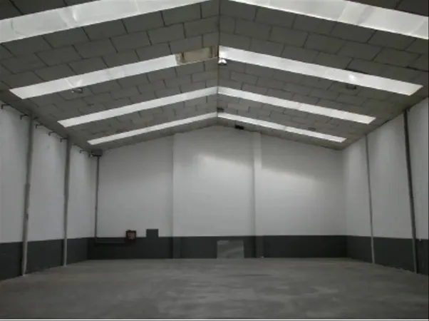
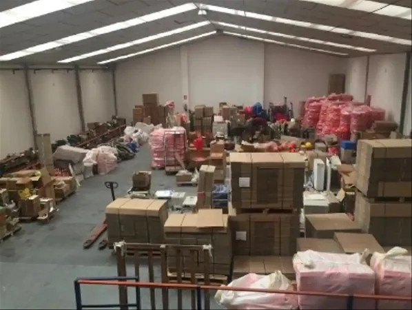
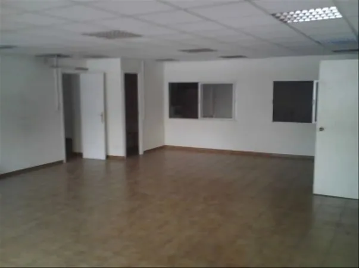

Plano · tocar un número de la lista lo marca acá
Letras: condiciones go/no-go · o: obra necesaria · números: lo que hay que medir o confirmar · c: lo que el chequeo de circulación marca hoy · trazos: el área o la franja de la cota · la línea azul: el largo libre a lo largo de la pista · ejes x/z: el origen de las cotas.
Condiciones go/no-go · si alguna sale mal, la nave se cae o hay que rehacer el layout
- Se decide en la visitaDecide: ≥ 6,6 m libres bajo jácenas, cerchas, luminarias e instalaciones en la vertical de la plataforma: plataforma a 3,8 m + 2,4 m del rider + 0,4 m de instalaciones (PROGRAMA §1). Si da menos, se baja la plataforma (a lo medido − 2,8 m), nunca el run-out.Altura libre medida con láser sobre la plataforma (m):
6 notas del layout
fuente de la cota: publicada («Altura mínima: 7m.»); en la foto 01 no hay jácenas colgadas bajo el falso techo inclinado, así que el mínimo está en el arranque de la cubierta junto a las medianeras. Falta medir bajo las lámparas de vapor
riesgo: Altura: la plataforma a 3,8 m deja 0,4 m de margen (3,8 + 2,4 = 6,2 ≤ 6,6). Las lámparas de vapor en ménsula bajo el alero quedan a ≈3,5 m sobre el tablero. El visor dibuja el alero a 7,35 m (alero mínimo = altura libre + 0,35)
riesgo: Los vestuarios, el aseo adaptado, la recepción y el café van bajo el forjado del altillo, con cotas supuestas (ver assumptions). Si el libre bajo forjado es < 2,5 m en algún tramo o hay pilares intermedios que no están dibujados, hay que rehacer esa parte
riesgo: El extintor de la plataforma va colgado del testero a la cota de la plataforma (el esquema solo admite zonas en altura dentro de un altillo). Tipo y número final de extintores, a definir por el técnico
riesgo: match2: el portón (anuncio: «Entrada trailer», «Puertas trailer: 1») cabe bajo el forjado del altillo con 4,0 m de alto, no con 5 m. Un tráiler de 4 m de altura no entra: solo furgones y camiones rígidos bajos. Hay que confirmarlo en la fachada
supuesto: Sentido de bajada +z: la plataforma va contra el testero ciego del fondo (foto 01: sin huecos y con 9,05 m bajo cumbrera). La pista termina en el pasillo transversal, delante del bloque delantero, desde donde el lounge y la recepción vigilan el final de las líneas
- Se decide en la visitaDecide: ≥ 24,6 m en línea recta a lo largo de la pista (plataforma 2 m, rampa, llano y el final más largo, run-out ≥ 8 m), de un pilar detrás de la plataforma al frente del altillo después del final. Si da menos, se acorta la rampa o el llano y se baja la plataforma, nunca el run-out.Distancia de un pilar al frente del altillo, a lo largo de la pista (m):
2 notas del layout
riesgo: El extintor de la plataforma va colgado del testero a la cota de la plataforma (el esquema solo admite zonas en altura dentro de un altillo). Tipo y número final de extintores, a definir por el técnico
riesgo: match2 (era el riesgo crítico del match): resuelto con el fondo real de 37,0 m y el bloque delantero dibujado como altillo de 4,95 m. fix2: el canto va en z 25,6 (catastro) y la pista termina en z 24,9, 0,7 m antes; queda margen si el canto real está más cerca, pero su posición es la cota que más importa en la visita (assumptions «medir en la visita»)
- Se decide en la visitaDecide: Dos salidas o más a la calle o a un espacio exterior seguro, con recorridos de evacuación ≤ 50 m (CTE DB-SI 3 §3, tabla 3.1), y sus puertas con ≥ 0,80 m de paso y 2,10 m bajo el dintel. Cada salida nueva solo vale si el muro da a la calle o a un patio con salida y la propiedad deja abrirla (las obras, en «Obra necesaria»).
- acceso acristalado de 1,9 m en la arista 2 (hueco 0, x 9,05 · z 37): nueva (hay que abrirla) · obra o1
- puerta peatonal de 1 m en la arista 2 (hueco 2, x 0,8 · z 37)
- salida de emergencia de 1,2 m en la arista 2 (hueco 3, x 7 · z 37): nueva (hay que abrirla) · obra o2
- salida de emergencia de 1,2 m en la arista 0 (hueco 6, x 1,1 · z 0): nueva (hay que abrirla) · obra o3
Salidas confirmadas (cuáles, a dónde dan, ancho de paso):4 notas del layout
riesgo: CONDICIÓN PARA FIRMAR (go/no-go): evacuación (CTE DB-SI 3 y PROGRAMA §3). Medianeras en tres lados y una sola fachada. Las salidas de la fachada (acceso acristalado x 8,1-10,0, salida de emergencia x 6,4-7,6 y la puerta peatonal 2 de las oficinas, x 0,3-1,3) quedan en la misma punta: desde el fondo forman < 3°, así que no son recorridos alternativos (CTE: > 45° o separación EI 30). Sin otra salida, park3d-walk daba 50,2 m desde la esquina lejana de la plataforma (≤ 50) y 40,5 m hasta un punto con dos alternativas (≤ 25). Propuesta (rp-b, 24/11; en shell.openings, proposed): salida de emergencia en el testero, x 0,5-1,7, a la unidad 0003 (Vallespir 8), espalda con espalda. En la revisión de rp-b pasó de x 4,45-5,65 a este paño: allí la pilastra de obra del testero (x 5,22-5,68, foto 01) le dejaba 0,77 m libres desde la jamba (< 0,80, DB-SI 3 tabla 4.1) y al oeste la cierra el cuadro eléctrico (x 3,6-4,4); se llega por la franja de 1,0 m entre la BIE y el gym, que arranca en z 1,25. Obra necesaria: (1) el hueco en la medianera y desviar por encima del dintel la tubería de la BIE, que baja por la esquina (x ≈ 0,3) y corre por el testero a ≈1,3 m hasta la BIE (foto 01); (2) para que cuente como salida de planta (CTE DB-SI Anejo A), porque la 0003 es otro establecimiento y otro sector de incendio: un vestíbulo de independencia (paredes EI 120, dos puertas EI2 30-C5 con barra antipánico que abren hacia la 0003, 0,50 m entre los barridos de las hojas) o un pasillo protegido por la 0003 hasta Vallespir; (3) que la 0003 tenga, a menos de 30 m de recorrido desde esa puerta, 0,5 m² de zonas de circulación por cada ocupante de esta nave y sus propias salidas, que no vuelvan a esta nave; (4) la servidumbre de paso pactada e inscrita con el vecino; (5) el estudio de evacuación del técnico del proyecto, que lo firma. El vestíbulo cabe justo dentro de la nave, en el rincón (≈1,8 × 1,25 m libres en x 0,3-2,1: la hoja de la medianera abre hacia la 0003, la otra va en su cara este, pegada a la BIE, y el gym arranca en z ≈ 1,4, 0,45 m² menos); si el técnico pide más, va del lado de la 0003. Con ella, walk da 32,7 m de recorrido máximo y 18,5 m hasta dos alternativas; cuenta la puerta de la medianera como salida, y con el vestíbulo dentro la salida de planta es su primera puerta, más cerca. Es una decisión de negocio: sin ese pacto (o un estudio de evacuación del técnico que lo resuelva de otro modo) esta nave no sirve
riesgo: Transitabilidad (rp-b, 24/11, park3d-walk: 0 errores y 2 avisos, antes 5 errores). Lo que se movió y por qué: (1) la salida de emergencia propuesta del testero (riesgo de arriba; en la revisión pasó de x 4,45-5,65, contra la pilastra de obra, a x 0,5-1,7, y el gym, de z 1,0 a 1,25: de 21,3 a 20,5 m²); (2) el taller acaba en z 35,9 (de 20,0 a 15,2 m², por debajo de los 20 de PROGRAMA): deja 1,1 m a lo largo de la fachada hasta la puerta peatonal 2, a la que no se llegaba (la cortaban el banco y la utilería del taller), y por ahí se llega también a la escalera existente de las oficinas, que queda como aviso de obra existente (1,08 m útiles, un tramo de 2,48 m; uso restringido: arriba no hay programa); (3) el extintor ext-retorno, colgado de un poste de la red, volaba 0,2 m en el retorno (1,61 m libres): se quita; el retorno queda con 1,85 y lo cubren ext-escalera y ext-vestuarios (≤ 15 m); (4) el aseo adaptado pasa de 2,2 a 2,4 m de fondo: con los aparatos del builder quedaban Ø 1,47 m libres
riesgo: Evacuación de la planta primera (rp-evac-a, 25/11; walkabilityReport `evacuation alternative`, 33,3 m → 22,9): a la planta primera solo sube la escalera existente de las oficinas, y los dos recorridos alternativos recién se abren en su pie, junto a la puerta 2 (CTE DB-SI 3 tabla 3.1: 25 m hasta ahí desde cada origen). El altillo de almacén, abierto a la nave y sin programa, quedaba a 33,3 m y el rincón de las oficinas de la fachada a 26,7. Dos tabiques de la propuesta (`cierre-oficinas-este`, x 6,55, y `cierre-oficinas-fachada`, z 33,55) dejan en uso la parte de las oficinas junto a la llegada de la escalera (≈41 m², la oficina del staff) y clausuran el resto de la planta (el altillo de almacén con la franja de oficinas que da a su puerta supuesta, ≈113 m², y las oficinas de la fachada, ≈19 m²): sin puerta, sin uso y fuera de la actividad (ni almacén ni de personal), sin acceso no tienen puntos ocupables y no son origen de evacuación (DB-SI Anejo A). Usarlas o abrirles una puerta, aunque sea solo de mantenimiento, vuelve `evacuation alternative`: 33,3 m desde el altillo de almacén (pasa de 50 m²: el Anejo A cuenta los puntos de las zonas de ocupación nula de más de 50 m²) y 26,4 desde las oficinas de la fachada. No es obra en la nave (la nave de hoy no los dibuja) ni se pierde programa: arriba solo estaba la oficina. Para usar el altillo de almacén (la toma de la foto 02) haría falta una segunda bajada desde él o que la escalera de las oficinas sea protegida (su puerta sería salida de planta; walk no lo modela): obra, decisión del usuario. Desde open-floors (25/11) esa parte lleva la oficina del staff como zona (`oficina`, 3,0 × 4,0 m: la nave no tenía `office`), así que la planta primera es del personal y su escalera se mide con los mínimos de uso restringido; la `evacuation alternative` queda en 23,4 m, desde dentro de la oficina.
supuesto: medir en la visita: la fachada a Carrer Lletra F 7 (no hay foto). Hay que ver la posición y las medidas del portón (supuesto en x 1,8-5,8 y ≤ 4,0 m de alto bajo el forjado), la puerta independiente de las oficinas (x 0,3-1,3), el hueco para el acceso acristalado (x 8,1-10,0) y la salida de emergencia (x 6,4-7,6), y las ventanas de las dos plantas. Si el portón está en otro sitio, el taller se mueve con él
- Se decide en la visitaDecide: Huella ≥ 0,28 m, contrahuella de 0,13 a 0,185 m y 0,54 ≤ 2C + H ≤ 0,70 (CTE DB-SUA 1 §4.2.1); ancho ≥ 1,20 m (PROGRAMA; el CTE pide 1,00-1,10); tramos de ≤ 2,25 m sin descanso. Una escalera existente que no cumple no sirve para el público (gym o altillo): hay que rehacerla o poner otra.
- de la plataforma (escalera-plataforma): huella 0,28 m, contrahuella 0,17 m, ancho 1,26 m, tramo de 1,9 m sin descanso, sube 3,8 m
- existente (escalera-existente): huella 0,25 m, contrahuella 0,16 m, ancho 1,08 m, tramo de 2,48 m sin descanso, sube 4,95 m
Huella × contrahuella × ancho de la escalera existente (m):5 notas del layout
riesgo: Programa ajustado. Lounge + café: 30,8 m², justo en el mínimo de 30. El taller mide 15,2 m² (por debajo de los 20 de PROGRAMA desde rp-b, que lo acorta para dejar el paso de la fachada hasta la puerta peatonal 2) y ocupa el paso del portón TIR. El gym baja a 21,3 m² (< 25 de PROGRAMA) para que la mini rampa llegue a 40 m², por la prioridad de PROGRAMA.md (pista > mini rampa > trampolines > gym), y el botiquín, a 6 m². No hay kicker ni airbag. La pista tiene una sola terraza (24,6 m de huella con run-out de 8 m) y su llano de 8,71 m no llega a los 9 m de PROGRAMA §1
riesgo: Transitabilidad (rp-b, 24/11, park3d-walk: 0 errores y 2 avisos, antes 5 errores). Lo que se movió y por qué: (1) la salida de emergencia propuesta del testero (riesgo de arriba; en la revisión pasó de x 4,45-5,65, contra la pilastra de obra, a x 0,5-1,7, y el gym, de z 1,0 a 1,25: de 21,3 a 20,5 m²); (2) el taller acaba en z 35,9 (de 20,0 a 15,2 m², por debajo de los 20 de PROGRAMA): deja 1,1 m a lo largo de la fachada hasta la puerta peatonal 2, a la que no se llegaba (la cortaban el banco y la utilería del taller), y por ahí se llega también a la escalera existente de las oficinas, que queda como aviso de obra existente (1,08 m útiles, un tramo de 2,48 m; uso restringido: arriba no hay programa); (3) el extintor ext-retorno, colgado de un poste de la red, volaba 0,2 m en el retorno (1,61 m libres): se quita; el retorno queda con 1,85 y lo cubren ext-escalera y ext-vestuarios (≤ 15 m); (4) el aseo adaptado pasa de 2,2 a 2,4 m de fondo: con los aparatos del builder quedaban Ø 1,47 m libres
riesgo: Evacuación de la planta primera (rp-evac-a, 25/11; walkabilityReport `evacuation alternative`, 33,3 m → 22,9): a la planta primera solo sube la escalera existente de las oficinas, y los dos recorridos alternativos recién se abren en su pie, junto a la puerta 2 (CTE DB-SI 3 tabla 3.1: 25 m hasta ahí desde cada origen). El altillo de almacén, abierto a la nave y sin programa, quedaba a 33,3 m y el rincón de las oficinas de la fachada a 26,7. Dos tabiques de la propuesta (`cierre-oficinas-este`, x 6,55, y `cierre-oficinas-fachada`, z 33,55) dejan en uso la parte de las oficinas junto a la llegada de la escalera (≈41 m², la oficina del staff) y clausuran el resto de la planta (el altillo de almacén con la franja de oficinas que da a su puerta supuesta, ≈113 m², y las oficinas de la fachada, ≈19 m²): sin puerta, sin uso y fuera de la actividad (ni almacén ni de personal), sin acceso no tienen puntos ocupables y no son origen de evacuación (DB-SI Anejo A). Usarlas o abrirles una puerta, aunque sea solo de mantenimiento, vuelve `evacuation alternative`: 33,3 m desde el altillo de almacén (pasa de 50 m²: el Anejo A cuenta los puntos de las zonas de ocupación nula de más de 50 m²) y 26,4 desde las oficinas de la fachada. No es obra en la nave (la nave de hoy no los dibuja) ni se pierde programa: arriba solo estaba la oficina. Para usar el altillo de almacén (la toma de la foto 02) haría falta una segunda bajada desde él o que la escalera de las oficinas sea protegida (su puerta sería salida de planta; walk no lo modela): obra, decisión del usuario. Desde open-floors (25/11) esa parte lleva la oficina del staff como zona (`oficina`, 3,0 × 4,0 m: la nave no tenía `office`), así que la planta primera es del personal y su escalera se mide con los mínimos de uso restringido; la `evacuation alternative` queda en 23,4 m, desde dentro de la oficina.
supuesto: medir en la visita: reparto del altillo entre oficinas y almacén abierto (supuesto: oficinas en x 0-7,6, almacén en x 7,6-16,6), su escalera (supuesta recta contra la medianera izquierda, x 0,25-1,35) y si hay montacargas
supuesto: plantilla Stoke Mountain adaptada: plataforma de 3,8 × 2,0 m; drop-in de 2,11 m en 5,89 m; 1 terraza de 4,59 m que cae 5°, con un drop de 1,25 m en 3,52 m; carril de transición en la línea 3 (bajada de 9,78 m, 1 roller de 0,3 m); módulos a escala real solo donde se llega con velocidad (µ 0,09): cajón corto en la terraza de la línea 1 y down rail sobre el drop en la 2; finales run-out de 8 m (líneas 1-2) y quarter (línea 3) y la escalera de la plataforma
- Se decide en la visitaDecide: Ningún pilar dentro de la pista; los de la franja de 0,2 m del murete y la red, forrados (el murete se corta en cada uno); el pasillo de retorno, ≥ 1,80 m libres con los pilares.Posición y sección de los pilares junto a la pista (m):
5 notas del layout
riesgo: CONDICIÓN PARA FIRMAR (go/no-go): evacuación (CTE DB-SI 3 y PROGRAMA §3). Medianeras en tres lados y una sola fachada. Las salidas de la fachada (acceso acristalado x 8,1-10,0, salida de emergencia x 6,4-7,6 y la puerta peatonal 2 de las oficinas, x 0,3-1,3) quedan en la misma punta: desde el fondo forman < 3°, así que no son recorridos alternativos (CTE: > 45° o separación EI 30). Sin otra salida, park3d-walk daba 50,2 m desde la esquina lejana de la plataforma (≤ 50) y 40,5 m hasta un punto con dos alternativas (≤ 25). Propuesta (rp-b, 24/11; en shell.openings, proposed): salida de emergencia en el testero, x 0,5-1,7, a la unidad 0003 (Vallespir 8), espalda con espalda. En la revisión de rp-b pasó de x 4,45-5,65 a este paño: allí la pilastra de obra del testero (x 5,22-5,68, foto 01) le dejaba 0,77 m libres desde la jamba (< 0,80, DB-SI 3 tabla 4.1) y al oeste la cierra el cuadro eléctrico (x 3,6-4,4); se llega por la franja de 1,0 m entre la BIE y el gym, que arranca en z 1,25. Obra necesaria: (1) el hueco en la medianera y desviar por encima del dintel la tubería de la BIE, que baja por la esquina (x ≈ 0,3) y corre por el testero a ≈1,3 m hasta la BIE (foto 01); (2) para que cuente como salida de planta (CTE DB-SI Anejo A), porque la 0003 es otro establecimiento y otro sector de incendio: un vestíbulo de independencia (paredes EI 120, dos puertas EI2 30-C5 con barra antipánico que abren hacia la 0003, 0,50 m entre los barridos de las hojas) o un pasillo protegido por la 0003 hasta Vallespir; (3) que la 0003 tenga, a menos de 30 m de recorrido desde esa puerta, 0,5 m² de zonas de circulación por cada ocupante de esta nave y sus propias salidas, que no vuelvan a esta nave; (4) la servidumbre de paso pactada e inscrita con el vecino; (5) el estudio de evacuación del técnico del proyecto, que lo firma. El vestíbulo cabe justo dentro de la nave, en el rincón (≈1,8 × 1,25 m libres en x 0,3-2,1: la hoja de la medianera abre hacia la 0003, la otra va en su cara este, pegada a la BIE, y el gym arranca en z ≈ 1,4, 0,45 m² menos); si el técnico pide más, va del lado de la 0003. Con ella, walk da 32,7 m de recorrido máximo y 18,5 m hasta dos alternativas; cuenta la puerta de la medianera como salida, y con el vestíbulo dentro la salida de planta es su primera puerta, más cerca. Es una decisión de negocio: sin ese pacto (o un estudio de evacuación del técnico que lo resuelva de otro modo) esta nave no sirve
riesgo: Los vestuarios, el aseo adaptado, la recepción y el café van bajo el forjado del altillo, con cotas supuestas (ver assumptions). Si el libre bajo forjado es < 2,5 m en algún tramo o hay pilares intermedios que no están dibujados, hay que rehacer esa parte
riesgo: La línea 3 va contra la medianera, con pilares cada ≈4,9 m: hay que forrar los pilares y poner red de 2-3 m. La franja de 0,2 m del murete, la red y el riego cae entre la cara de los pilares (x 16,4) y la pista (x 15,9). En obra el murete se corta o envuelve cada pilar, y la red y el riego se fijan a ellos
riesgo: fix2: los pilares del canto del altillo son supuestos (ninguna foto los enseña). Se dibujan fuera de los finales de línea, a 1,4 m de los topes y forrados; si en obra hay pilares en el mismo canto (z ≈ 25,6) frente a las líneas, quedan a 0,7 m del tope: habría que forrarlos y acortar el run-out o mover la pista. El validador todavía no mira los pilares de shell.existing[].columns (ni solapes, ni pasos, ni el final del run-out): se comprobaron a mano
riesgo: Transitabilidad (rp-b, 24/11, park3d-walk: 0 errores y 2 avisos, antes 5 errores). Lo que se movió y por qué: (1) la salida de emergencia propuesta del testero (riesgo de arriba; en la revisión pasó de x 4,45-5,65, contra la pilastra de obra, a x 0,5-1,7, y el gym, de z 1,0 a 1,25: de 21,3 a 20,5 m²); (2) el taller acaba en z 35,9 (de 20,0 a 15,2 m², por debajo de los 20 de PROGRAMA): deja 1,1 m a lo largo de la fachada hasta la puerta peatonal 2, a la que no se llegaba (la cortaban el banco y la utilería del taller), y por ahí se llega también a la escalera existente de las oficinas, que queda como aviso de obra existente (1,08 m útiles, un tramo de 2,48 m; uso restringido: arriba no hay programa); (3) el extintor ext-retorno, colgado de un poste de la red, volaba 0,2 m en el retorno (1,61 m libres): se quita; el retorno queda con 1,85 y lo cubren ext-escalera y ext-vestuarios (≤ 15 m); (4) el aseo adaptado pasa de 2,2 a 2,4 m de fondo: con los aparatos del builder quedaban Ø 1,47 m libres
Obra necesaria · lo que la nave no tiene hoy y la propuesta necesita: decisiones del usuario, a ver en la visita si se puede
- hueco nuevoObra: Acceso público acristalado y sin escalón (x 8,1-10,0 m) al pasillo de entrada, bajo el altillo (4,6 m libres)En la visita: Que el paño de muro dé a la calle o a un espacio exterior seguro (si da a una nave vecina, solo vale como salida de planta, con un vestíbulo de independencia o un pasillo protegido: CTE DB-SI Anejo A), que en el hueco no haya pilares, bajantes ni instalaciones, y que la propiedad deje abrirlo. Como entrada de público, a cota de la calle y sin escalón.
- Es la entrada de público: el chequeo de circulación mide desde ella.
- Es una de las 4 salidas que cuenta el chequeo de circulación.
De dónde sale (2)
fuente: propuesta: acceso público acristalado y sin escalón (x 8,1-10,0 m) al pasillo de entrada, bajo el altillo (4,6 m libres)
riesgo 1: CONDICIÓN PARA FIRMAR (go/no-go): evacuación (CTE DB-SI 3 y PROGRAMA §3). Medianeras en tres lados y una sola fachada. Las salidas de la fachada (acceso acristalado x 8,1-10,0, salida de emergencia x 6,4-7,6 y la puerta peatonal 2 de las oficinas, x 0,3-1,3) quedan en la misma punta: desde el fondo forman < 3°, así que no son recorridos alternativos (CTE: > 45° o separación EI 30). Sin otra salida, park3d-walk daba 50,2 m desde la esquina lejana de la plataforma (≤ 50) y 40,5 m hasta un punto con dos alternativas (≤ 25). Propuesta (rp-b, 24/11; en shell.openings, proposed): salida de emergencia en el testero, x 0,5-1,7, a la unidad 0003 (Vallespir 8), espalda con espalda. En la revisión de rp-b pasó de x 4,45-5,65 a este paño: allí la pilastra de obra del testero (x 5,22-5,68, foto 01) le dejaba 0,77 m libres desde la jamba (< 0,80, DB-SI 3 tabla 4.1) y al oeste la cierra el cuadro eléctrico (x 3,6-4,4); se llega por la franja de 1,0 m entre la BIE y el gym, que arranca en z 1,25. Obra necesaria: (1) el hueco en la medianera y desviar por encima del dintel la tubería de la BIE, que baja por la esquina (x ≈ 0,3) y corre por el testero a ≈1,3 m hasta la BIE (foto 01); (2) para que cuente como salida de planta (CTE DB-SI Anejo A), porque la 0003 es otro establecimiento y otro sector de incendio: un vestíbulo de independencia (paredes EI 120, dos puertas EI2 30-C5 con barra antipánico que abren hacia la 0003, 0,50 m entre los barridos de las hojas) o un pasillo protegido por la 0003 hasta Vallespir; (3) que la 0003 tenga, a menos de 30 m de recorrido desde esa puerta, 0,5 m² de zonas de circulación por cada ocupante de esta nave y sus propias salidas, que no vuelvan a esta nave; (4) la servidumbre de paso pactada e inscrita con el vecino; (5) el estudio de evacuación del técnico del proyecto, que lo firma. El vestíbulo cabe justo dentro de la nave, en el rincón (≈1,8 × 1,25 m libres en x 0,3-2,1: la hoja de la medianera abre hacia la 0003, la otra va en su cara este, pegada a la BIE, y el gym arranca en z ≈ 1,4, 0,45 m² menos); si el técnico pide más, va del lado de la 0003. Con ella, walk da 32,7 m de recorrido máximo y 18,5 m hasta dos alternativas; cuenta la puerta de la medianera como salida, y con el vestíbulo dentro la salida de planta es su primera puerta, más cerca. Es una decisión de negocio: sin ese pacto (o un estudio de evacuación del técnico que lo resuelva de otro modo) esta nave no sirve
Visto: - hueco nuevoObra: Segunda salida de la nave (PROGRAMA §3) desde el vestíbulo de entrada, al lado del aseo adaptado (x 6,4-7,6 m); la nave solo tiene la fachada de la calle (medianeras en los otros tres lados)En la visita: Que el paño de muro dé a la calle o a un espacio exterior seguro (si da a una nave vecina, solo vale como salida de planta, con un vestíbulo de independencia o un pasillo protegido: CTE DB-SI Anejo A), que en el hueco no haya pilares, bajantes ni instalaciones, y que la propiedad deje abrirlo.
- Es una de las 4 salidas que cuenta el chequeo de circulación.
De dónde sale (2)
fuente: propuesta: segunda salida de la nave (PROGRAMA §3) desde el vestíbulo de entrada, al lado del aseo adaptado (x 6,4-7,6 m); la nave solo tiene la fachada de la calle (medianeras en los otros tres lados)
riesgo 1: CONDICIÓN PARA FIRMAR (go/no-go): evacuación (CTE DB-SI 3 y PROGRAMA §3). Medianeras en tres lados y una sola fachada. Las salidas de la fachada (acceso acristalado x 8,1-10,0, salida de emergencia x 6,4-7,6 y la puerta peatonal 2 de las oficinas, x 0,3-1,3) quedan en la misma punta: desde el fondo forman < 3°, así que no son recorridos alternativos (CTE: > 45° o separación EI 30). Sin otra salida, park3d-walk daba 50,2 m desde la esquina lejana de la plataforma (≤ 50) y 40,5 m hasta un punto con dos alternativas (≤ 25). Propuesta (rp-b, 24/11; en shell.openings, proposed): salida de emergencia en el testero, x 0,5-1,7, a la unidad 0003 (Vallespir 8), espalda con espalda. En la revisión de rp-b pasó de x 4,45-5,65 a este paño: allí la pilastra de obra del testero (x 5,22-5,68, foto 01) le dejaba 0,77 m libres desde la jamba (< 0,80, DB-SI 3 tabla 4.1) y al oeste la cierra el cuadro eléctrico (x 3,6-4,4); se llega por la franja de 1,0 m entre la BIE y el gym, que arranca en z 1,25. Obra necesaria: (1) el hueco en la medianera y desviar por encima del dintel la tubería de la BIE, que baja por la esquina (x ≈ 0,3) y corre por el testero a ≈1,3 m hasta la BIE (foto 01); (2) para que cuente como salida de planta (CTE DB-SI Anejo A), porque la 0003 es otro establecimiento y otro sector de incendio: un vestíbulo de independencia (paredes EI 120, dos puertas EI2 30-C5 con barra antipánico que abren hacia la 0003, 0,50 m entre los barridos de las hojas) o un pasillo protegido por la 0003 hasta Vallespir; (3) que la 0003 tenga, a menos de 30 m de recorrido desde esa puerta, 0,5 m² de zonas de circulación por cada ocupante de esta nave y sus propias salidas, que no vuelvan a esta nave; (4) la servidumbre de paso pactada e inscrita con el vecino; (5) el estudio de evacuación del técnico del proyecto, que lo firma. El vestíbulo cabe justo dentro de la nave, en el rincón (≈1,8 × 1,25 m libres en x 0,3-2,1: la hoja de la medianera abre hacia la 0003, la otra va en su cara este, pegada a la BIE, y el gym arranca en z ≈ 1,4, 0,45 m² menos); si el técnico pide más, va del lado de la 0003. Con ella, walk da 32,7 m de recorrido máximo y 18,5 m hasta dos alternativas; cuenta la puerta de la medianera como salida, y con el vestíbulo dentro la salida de planta es su primera puerta, más cerca. Es una decisión de negocio: sin ese pacto (o un estudio de evacuación del técnico que lo resuelva de otro modo) esta nave no sirve
Visto: - hueco nuevoObra: Obra necesaria: (1) el hueco en la medianera del fondo y desviar por encima del dintel la tubería de la BIE, que corre por el testero a ≈1,3 m desde la esquina hasta la BIE (foto 01); (2) para que sea salida de planta (DB-SI Anejo A), porque la 0003 es otro establecimiento y otro sector: un vestíbulo de independencia (paredes EI 120, dos puertas EI2 30-C5 con barra antipánico que abren hacia la 0003, 0,50 m entre los barridos de las hojas) o un pasillo protegido por la 0003 hasta Vallespir; (3) que la 0003 tenga, a menos de 30 m de recorrido de esa puerta, 0,5 m² de circulación por ocupante de esta nave y salidas propias que no vuelvan aquí; (4) la servidumbre de paso pactada e inscrita con el vecino; (5) el estudio de evacuación del técnico, que lo firma en el proyecto de la licencia.En la visita: Que el paño de muro dé a la calle o a un espacio exterior seguro (si da a una nave vecina, solo vale como salida de planta, con un vestíbulo de independencia o un pasillo protegido: CTE DB-SI Anejo A), que en el hueco no haya pilares, bajantes ni instalaciones, y que la propiedad deje abrirlo.
- Es una de las 4 salidas que cuenta el chequeo de circulación.
De dónde sale (2)
fuente: propuesta (rp-b, transitabilidad): salida de emergencia en el testero, x 0,5-1,7, en el paño libre de la foto 01 entre la tubería de la BIE que baja por la esquina (x ≈ 0,3) y la BIE (x 2,25-2,95), a la unidad 0003 (Vallespir 8) espalda con espalda. Iba en x 4,45-5,65, entre el cuadro eléctrico (x 3,6-4,4) y la pilastra de obra del testero (x 5,22-5,68), que le dejaba 0,77 m libres desde la jamba (< 0,80, DB-SI 3 tabla 4.1). Se llega por la franja de 1,0 m entre la BIE y el gym (z 1,25). Obra necesaria: (1) el hueco en la medianera del fondo y desviar por encima del dintel la tubería de la BIE, que corre por el testero a ≈1,3 m desde la esquina hasta la BIE (foto 01); (2) para que sea salida de planta (DB-SI Anejo A), porque la 0003 es otro establecimiento y otro sector: un vestíbulo de independencia (paredes EI 120, dos puertas EI2 30-C5 con barra antipánico que abren hacia la 0003, 0,50 m entre los barridos de las hojas) o un pasillo protegido por la 0003 hasta Vallespir; (3) que la 0003 tenga, a menos de 30 m de recorrido de esa puerta, 0,5 m² de circulación por ocupante de esta nave y salidas propias que no vuelvan aquí; (4) la servidumbre de paso pactada e inscrita con el vecino; (5) el estudio de evacuación del técnico, que lo firma en el proyecto de la licencia. Sin ella las dos salidas de la fachada no son recorridos alternativos desde el fondo (DB-SI 3 tabla 3.1: 25 m) y el recorrido desde la plataforma pasa de 50 m
riesgo 1: CONDICIÓN PARA FIRMAR (go/no-go): evacuación (CTE DB-SI 3 y PROGRAMA §3). Medianeras en tres lados y una sola fachada. Las salidas de la fachada (acceso acristalado x 8,1-10,0, salida de emergencia x 6,4-7,6 y la puerta peatonal 2 de las oficinas, x 0,3-1,3) quedan en la misma punta: desde el fondo forman < 3°, así que no son recorridos alternativos (CTE: > 45° o separación EI 30). Sin otra salida, park3d-walk daba 50,2 m desde la esquina lejana de la plataforma (≤ 50) y 40,5 m hasta un punto con dos alternativas (≤ 25). Propuesta (rp-b, 24/11; en shell.openings, proposed): salida de emergencia en el testero, x 0,5-1,7, a la unidad 0003 (Vallespir 8), espalda con espalda. En la revisión de rp-b pasó de x 4,45-5,65 a este paño: allí la pilastra de obra del testero (x 5,22-5,68, foto 01) le dejaba 0,77 m libres desde la jamba (< 0,80, DB-SI 3 tabla 4.1) y al oeste la cierra el cuadro eléctrico (x 3,6-4,4); se llega por la franja de 1,0 m entre la BIE y el gym, que arranca en z 1,25. Obra necesaria: (1) el hueco en la medianera y desviar por encima del dintel la tubería de la BIE, que baja por la esquina (x ≈ 0,3) y corre por el testero a ≈1,3 m hasta la BIE (foto 01); (2) para que cuente como salida de planta (CTE DB-SI Anejo A), porque la 0003 es otro establecimiento y otro sector de incendio: un vestíbulo de independencia (paredes EI 120, dos puertas EI2 30-C5 con barra antipánico que abren hacia la 0003, 0,50 m entre los barridos de las hojas) o un pasillo protegido por la 0003 hasta Vallespir; (3) que la 0003 tenga, a menos de 30 m de recorrido desde esa puerta, 0,5 m² de zonas de circulación por cada ocupante de esta nave y sus propias salidas, que no vuelvan a esta nave; (4) la servidumbre de paso pactada e inscrita con el vecino; (5) el estudio de evacuación del técnico del proyecto, que lo firma. El vestíbulo cabe justo dentro de la nave, en el rincón (≈1,8 × 1,25 m libres en x 0,3-2,1: la hoja de la medianera abre hacia la 0003, la otra va en su cara este, pegada a la BIE, y el gym arranca en z ≈ 1,4, 0,45 m² menos); si el técnico pide más, va del lado de la 0003. Con ella, walk da 32,7 m de recorrido máximo y 18,5 m hasta dos alternativas; cuenta la puerta de la medianera como salida, y con el vestíbulo dentro la salida de planta es su primera puerta, más cerca. Es una decisión de negocio: sin ese pacto (o un estudio de evacuación del técnico que lo resuelva de otro modo) esta nave no sirve
Visto:
Medir y confirmar en la visita · 8, de las notas del layout
-
Detalle
medir en la visita:
(supuesta 4,60 m; las fotos dan 4,0-4,7) y de su suelo (4,95 m). Si el canto queda antes de z 24,9, el run-out se acorta por debajo de 8 m y hay que bajar la plataforma
Medido: -
Detalle
medir en la visita:
Tocan el pasillo transversal, los vestuarios y el lounge
Medido: -
Detalle
medir en la visita:
Medido: -
Detalle
medir en la visita:
Hay que ver la posición y las medidas del portón (supuesto en x 1,8-5,8 y ≤ 4,0 m de alto bajo el forjado), la puerta independiente de las oficinas (x 0,3-1,3), el hueco para el acceso acristalado (x 8,1-10,0) y la salida de emergencia (x 6,4-7,6), y las ventanas de las dos plantas. Si el portón está en otro sitio, el taller se mueve con él
Medido: -
Detalle
medir en la visita:
Medido: -
Medido:
-
Detalle
queda margen si el canto real está más cerca, pero su posición es la cota que más importa en la visita (assumptions «medir en la visita»)
Medido: -
Detalle
match2: el portón (anuncio: «Entrada trailer», «Puertas trailer: 1») cabe bajo el forjado del altillo con 4,0 m de alto, no con 5 m.
Medido:
Circulación · lo que el chequeo marca hoy (CTE DB-SI 3, DB-SUA): ver en la visita si el paso real es así
Fotos que conviene sacar
- Fachada y acera desde enfrente, con la calle a los dos lados (la llegada a pie y en coche, y dónde se aparca).
- Cada puerta (5: acceso acristalado, portón seccional, puerta peatonal, salida de emergencia) desde dentro y desde fuera, con el metro abierto en el paso libre y en la altura.
- La pared del arranque de la pista (detrás de la plataforma) de suelo a cubierta, con la jácena o la cercha de encima y el láser apuntando a su cara de abajo.
- El final de la pista: lo que hay después del run-out (muro, frente del altillo, salida) y el suelo de esa franja.
- Las dos medianeras de punta a punta, para contar pórticos y pilastras y ver si sobresalen.
- La cubierta y los lucernarios desde el centro de la nave, mirando a cada testero (para la luz del 3D y el estado de las placas).
- El suelo: estado, juntas, desniveles, sumideros y arquetas.
- El cuadro eléctrico, la acometida de agua y los desagües (vestuarios y aseos nuevos).
- El frente del altillo de punta a punta, y debajo: la altura libre, sus pilares y sus puertas.
- La escalera existente de lado, con el metro en una huella y una contrahuella, y su llegada arriba.
- A. Altura libre sobre la plataforma: una foto con la medida a la vista.
- B. Largo libre para la pista: una foto con la medida a la vista.
- C. Salidas y evacuación: una foto con la medida a la vista.
- D. Escaleras: peldaños, ancho y tramos: una foto con la medida a la vista.
- E. Pilares en la pista, su franja o el retorno: una foto con la medida a la vista.
- o1. Obra necesaria (x 9,05 · z 37): el sitio desde dentro y, si se puede, desde fuera, con lo que hay detrás.
- o2. Obra necesaria (x 7 · z 37): el sitio desde dentro y, si se puede, desde fuera, con lo que hay detrás.
- o3. Obra necesaria (x 1,1 · z 0): el sitio desde dentro y, si se puede, desde fuera, con lo que hay detrás.
- Repetir desde el mismo sitio las fotos del anuncio de abajo (el móvil a la altura de los ojos, sin zoom): con la nave medida se vuelven a ajustar las cámaras y el plano.


